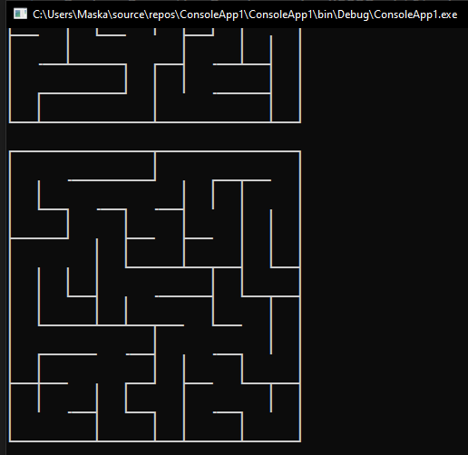

Генератор лабиринтовMaze generator
Скачать
Download
3 KB
Простая программа на C#, которая генерирует случайные лабиринты, составленные из символов рамки, путём заполнения поля случайными путями. Больше возможностей будет добавлено в будущем.
A simple C# program that generates random mazes made of frame symbols by filling a field with random paths. More features will be added in the future.
